Clase 9 Redes convolucionales
Las redes convolucionales son un tipo de arquitectura de red que utiliza ciertos supuestos acerca de los pesos, en contraste a las redes totalmente conexas donde los pesos pueden tomar cualquier valor. Esos supuestos están adaptados para explotar la estructura señales, por ejemplo: sonido o imágenes. En estos dos casos, se trata de entradas que tienen una estructura adicional de proximidad (es decir, hay un concepto de pixeles cercanos y lejanos, igual de tiempos cercanos o lejanos). Las redes convolucionales son la arquitectura más exitosa para tratar con este tipo de problemas con estructura espacial o temporal.
Hay tres consecuencias básicos que producen el uso de convoluciones, que explicamos primero intuitivamente:
Conexiones ralas: existen unidades que solo están conectadas a una fracción relativamente chica de las unidades de la capa anterior (en lugar de todas, como en redes totalmente conexas). Por ejemplo: una unidad que busca detectar una forma en una esquina de una imagen no necesita estar conectada a pixeles de otras partes de la imagen.
Parámetros compartidos: diferentes unidades tienen pesos compartidos. Por ejemplo: una unidad que quiere detectar el sonido de cierto animal al principio de la grabación puede utilizar los mismos pesos aplicados a otra parte de la grabación. Podemos “mover” el detector (con los mismos pesos) a lo largo de la grabación para ver en dónde detecta el sonido que nos interesa.
Equivarianza: Una translación de una entrada (en tiempo o espacio), produce una traslación equivalente en la salida. Por ejemplo, Si una unidad asociada a la esquina superior derecha de una imagen detecta un número, entonces habrá otra unidad que puede detectar el número en la esquina inferior.
9.1 Filtros convolucionales
Filtros en una dimensión
Comenzamos por considerar filtros para una serie de tiempo.
Por ejemplo, consideramos la siguiente serie, y promedios móviles centrados de longitud 5. Los promedios móviles filtran las componentes de frecuencia alta (variaciones en tiempos cortos), y nos dejan con la variación de menor frecuencia:
library(ggplot2)
library(dplyr)
library(tidyr)
library(RcppRoll)
h <- function(x){ifelse(x>0,x,0)}
datos <- data_frame(t = 1:length(BJsales),
serie = as.numeric(BJsales) + rnorm(length(BJsales), 0, 10)) %>%
mutate(promedio_mov = roll_mean(serie, 5, align='center', fill = NA))
ggplot(filter(datos, t < 100), aes(x=t, y=serie)) + geom_line() +
geom_line(aes(y=promedio_mov), colour='red', size=1.2)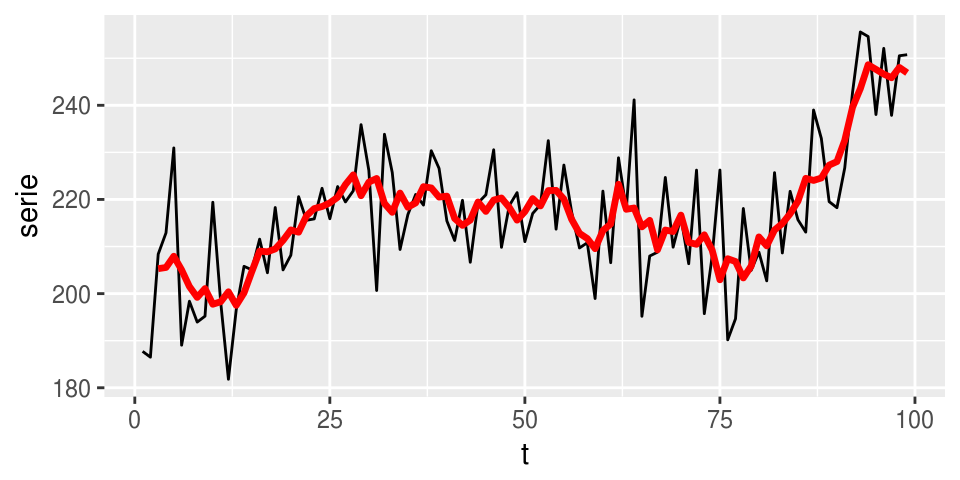
Podemos escribir este filtro de la siguiente manera: si \(x_t\) representa la serie original, y \(y_t\) la serie filtrada, entonces \[ y_t = \frac{1}{5}(x_{t-2} + x_{t-1} + x_t + x_{t+1}+x_{t+2})\]
Podemos escribir esta operación poniendo \[f =\frac{1}{5} (\ldots, 0,0,1,1,1,1,1,0,0,\ldots)\] donde \(f_s=1/5\) para \(s=-2,-1,0,1,2\) y cero en otro caso. Entonces \[y_t = \cdots + x_{t-2}f_{-2} + x_{t-1}f_{-1} + x_{t}f_{0} +x_{t+1}f_{1} +x_{t+2}f_{2}\] Que también se puede escribir como \[\begin{equation} y_t = \sum_{s=-\infty}^{\infty} x_s f_{t-s} \end{equation}\]Nótese que estamos moviendo el filtro \(f\) a lo largo de la serie (tiempo) y aplicándolo cada vez.
Este es un ejemplo de filtro convolucional: es una vector \(f\) que se aplica a la serie \(x\) como en la ecuación anterior para obtener una serie transformada (filtrada) \(y\).
Otro ejemplo son las primeras diferencias, que toma valores altos cuando la serie crece y bajos cuando decrece (extrae los incrementos)
datos <- datos %>% mutate(dif = promedio_mov - lag(promedio_mov))
ggplot(datos, aes(x=t, y=dif)) + geom_line() + geom_abline(slope=0, intercept=0)## Warning: Removed 5 rows containing missing values (geom_path).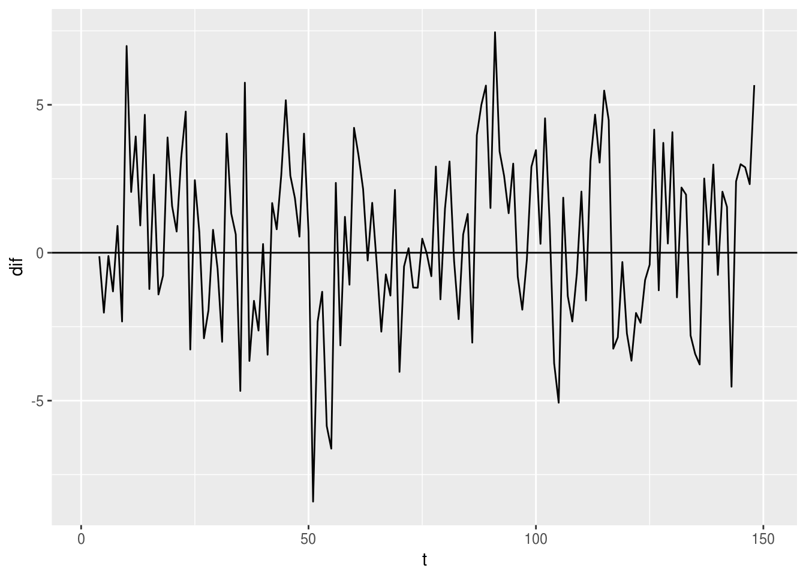 ¿Cuál es el filtro \(f\) en este caso?
Filtros convolucionales en dos dimensiones
En dos dimensiones, nuestro filtro es una matriz \(f_{i,j}\), que se aplica a una matriz \(x_{i,j}\) (podemos pensar que es una imagen) alrededor de cada posible pixel, para obtener la matriz (imagen) filtrada \(y_{i,j}\) dada por
\[\begin{equation} y_{a,b} = \sum_{s,t=-\infty}^{\infty} x_{s,t} f_{s-a,t-b} \end{equation}\]A la matriz \(f\) se le llama matriz convolucional, kernel o máscara del filtro
Por ejemplo, consideremos el filtro de 3x3
filtro_difuminar <- matrix(rep(1/9,9), 3,3, byrow=T)
filtro_difuminar## [,1] [,2] [,3]
## [1,] 0.1111111 0.1111111 0.1111111
## [2,] 0.1111111 0.1111111 0.1111111
## [3,] 0.1111111 0.1111111 0.1111111El centro de este filtro se sobrepone sobre la cada pixel de la imagen \(x\), se multiplican los valores de la imagen por los del filtro y se suma para obtener el nuevo pixel de la imagen \(y\). Por ejemplo, si tenemos la imagen
¿Qué efecto tiene este filtro? Este filtro promedia los pixeles de un parche de 3x3 de la imagen, o suaviza la imagen. Es el análogo en 2 dimensiones del filtro de promedios móviles que vimos arriba.
library(imager)
estatua <- load.image('imagenes/escultura.jpg') %>% grayscale
plot(estatua)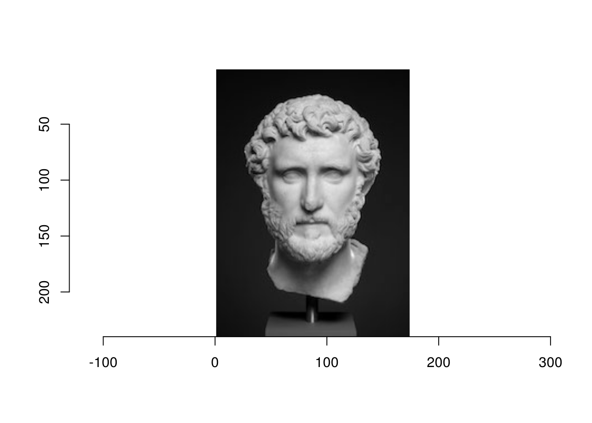
estatua_mat <- as.array(estatua)
dim(estatua_mat)## [1] 174 240 1 1estatua_dif <- array(0, c(dim(estatua)[1]-1, dim(estatua)[2]-1, 1, 1))
# Ojo: esta manera es muy lenta: si necesitas convoluciones a mano busca
# paquetes apropiados
for(i in 2:dim(estatua_dif)[1]){
for(j in 2:dim(estatua_dif)[2]){
estatua_dif[i,j,1,1] <- sum(filtro_difuminar*estatua[(i-1):(i+1),(j-1):(j+1),1,1])
}
}
plot(as.cimg(estatua_dif), axes=FALSE)Podemos intentar otro filtro, que detecta bordes de arriba hacia abajo (es decir, cambios de intensidad que van de bajos a altos conforme bajamos en la imagen):
filtro_borde <- (matrix(c(-1,-1,-1,0,0,0,1,1,1), 3,3, byrow=T))
filtro_borde## [,1] [,2] [,3]
## [1,] -1 -1 -1
## [2,] 0 0 0
## [3,] 1 1 1estatua_filtrada <- array(0, c(dim(estatua_dif)[1]-1, dim(estatua_dif)[2]-1, 1, 1))
for(i in 2:dim(estatua_filtrada)[1]){
for(j in 2:dim(estatua_filtrada)[2]){
estatua_filtrada[i,j,1,1] <- sum(t(filtro_borde)*estatua_dif[(i-1):(i+1),(j-1):(j+1),1,1])
}
}
plot(as.cimg(estatua_filtrada))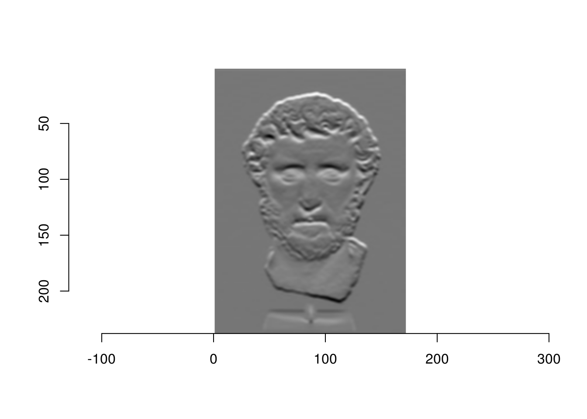
Este filtro toma valores altos cuando hay un gradiente de intensidad de arriba hacia abajo.
¿Cómo harías un filtro que detecta curvas? Considera el siguiente ejemplo, en donde construimos un detector de diagonales:
library(keras)
mnist <- dataset_mnist()
digito <- t(mnist$train$x[10,,])
plot(as.cimg(digito))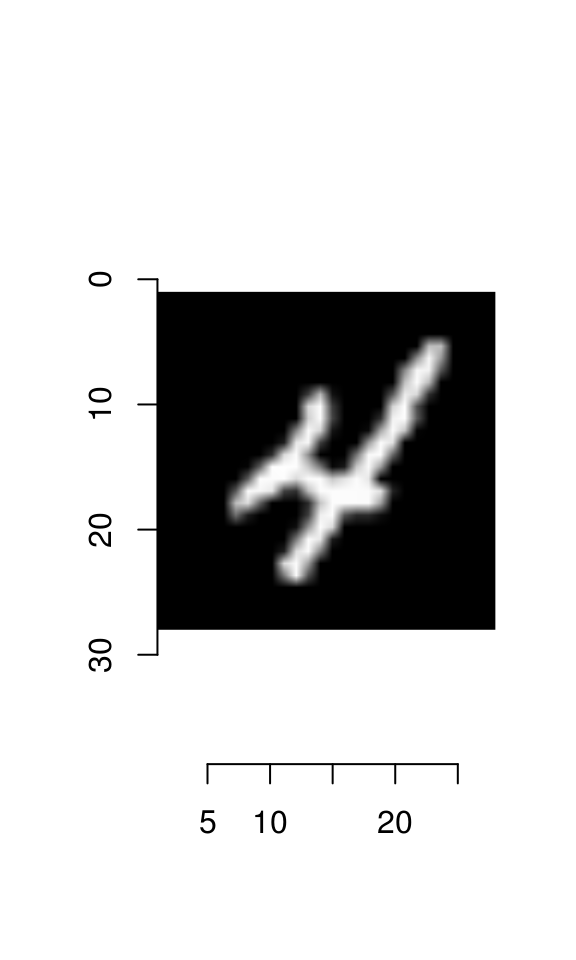
filtro_diag <- matrix(rep(-1,25), 5, 5)
diag(filtro_diag) <- 2
for(i in 1:4){
filtro_diag[i, i+1] <- 1
filtro_diag[i+1, i] <- 1
}
filtro_diag_1 <- filtro_diag[, 5:1]
filtro_diag_1## [,1] [,2] [,3] [,4] [,5]
## [1,] -1 -1 -1 1 2
## [2,] -1 -1 1 2 1
## [3,] -1 1 2 1 -1
## [4,] 1 2 1 -1 -1
## [5,] 2 1 -1 -1 -1digito_f <- array(0, c(dim(digito)[1]-2, dim(digito)[2]-2, 1, 1))
for(i in 3:dim(digito_f)[1]){
for(j in 3:dim(digito_f)[2]){
digito_f[i,j,1,1] <- sum((filtro_diag_1)*digito[(i-2):(i+2),(j-2):(j+2)])
}
}
plot(as.cimg(digito_f))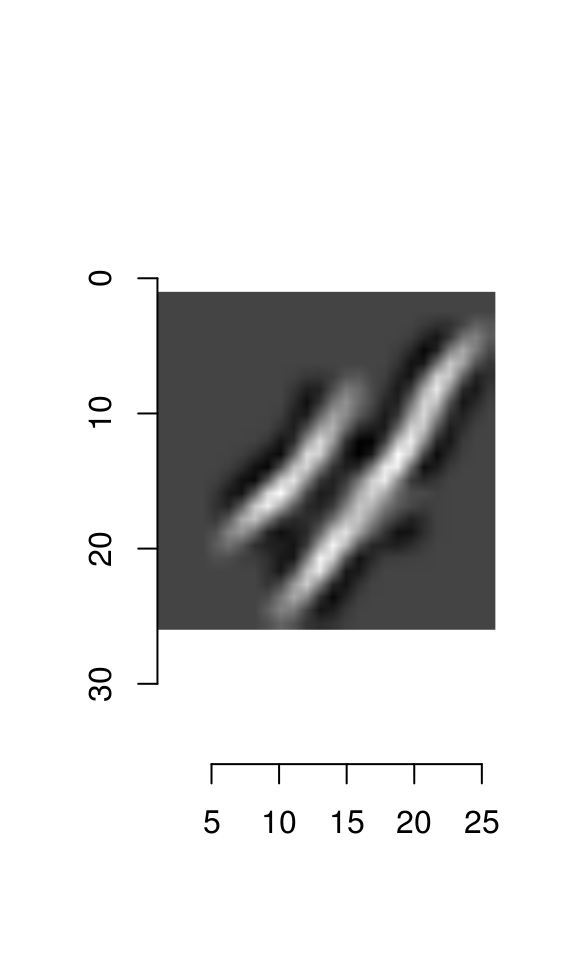
9.1.1 Filtros convolucionales para redes neuronales
En redes neuronales, la idea es que que qeremos aprender estos filtros a partir de los datos. La imagen filtrada nos da las entradas de la siguiente capa.
Entonces, supongamos que un filtro de 3x3 está dado por ciertos pesos
\[ f = \left[ {\begin{array}{ccccc} \theta_{1,1} & \theta_{1,2} & \theta_{1,3} \\ \theta_{2,1} & \theta_{2,2} & \theta_{2,3} \\ \theta_{3,1} & \theta_{3,2} & \theta_{3,3} \\ \end{array} } \right] \]
Este filtro lo aplicaremos a cada parche de la imagen de entrada. Empezamos aplicando el filtro sobre la parte superior izquierda de la imagen para calcular la primera unidad de salida \(a_1\)
knitr::include_graphics('./imagenes/conv_1.png')
Ahora nos movemos un pixel a la derecha y aplicamos el filtro para obtener la unidad \(a_2\). Podemos poner las unidades en el orden de la imagen para entender mejor las unidades:
knitr::include_graphics('./imagenes/conv_2.png')
Al aplicar el filtro a lo largo de toda la imagen, obtenemos 9 unidades de salida:
knitr::include_graphics('./imagenes/conv_3.png')
Finalmente, podemos agregar más parámetros para otros filtros:
knitr::include_graphics('./imagenes/conv_4.png')
9.1.2 Capas de agregación (pooling)
En procesamiento de imágenes y redes convolucionales también se utilizan capas de pooling. Estas se encargan de resumir pixeles adyacentes. Una de las más populares es el max pooling, donde en cada parche de la imagen tomamos el máximo.
knitr::include_graphics('./imagenes/pooling_1.png')
Hay dos razones para usar estas agregaciones:
- Obtener invarianza a translaciones adicional (en un parche de la imagen, solo importa si alguno de las unidades agregadas está activa para que el max-pooling esté activo)
- Reduce el tamaño de la imagen (o de una capa de convolución) y en consecuencia tenemos menos parámetros que tratar en las siguientes capas
9.1.3 Ejemplo (arquitectura LeNet):
Las capas de pooling generalmente se aplican después de las convoluciones, y hacia al final usamos capas totalmente conexas. Estas últimas capas se encargan de combinar la información de las capas de convolución anteriores, que detectan patrones simples, para obtener unidades que se encargan de detectar patrones más complejos.
knitr::include_graphics('./imagenes/lenet_1.png')
## [1] 7291 257##
## 0 1 2 3 4 5 6 7 8 9
## 1194 1005 731 658 652 556 664 645 542 644Ponemos el rango entre [0,1] (pixeles positivos) y usamos codificación dummy
x_train <- digitos_entrena %>% select(contains('pixel')) %>% as.matrix + 1
x_train <- x_train/2
dim(x_train) <- c(nrow(x_train), 16, 16, 1)
x_test <- digitos_prueba %>% select(contains('pixel')) %>% as.matrix + 1
x_test <- x_test/2
dim(x_test) <- c(nrow(x_test), 16, 16, 1)
y_train <- to_categorical(digitos_entrena$digito, 10)
y_test <- to_categorical(digitos_prueba$digito, 10)Para fines de interpretación, agregaremos regularización ridge además de dropout (puedes obtener buen desempeño usando solamente dropout):
usar_cache <- TRUE
if(!usar_cache){
set.seed(213)
model_2 <- keras_model_sequential()
model_2 %>%
layer_conv_2d(filters = 8, kernel_size = c(5,5), activation = 'relu',
input_shape = c(16,16,1), padding ='same',
kernel_regularizer = regularizer_l2(0.01) ) %>%
layer_max_pooling_2d(pool_size = c(2, 2)) %>%
layer_dropout(rate = 0.25) %>%
layer_conv_2d(filters = 12, kernel_size = c(3,3), activation = 'relu',
kernel_regularizer = regularizer_l2(0.01)) %>%
layer_max_pooling_2d(pool_size = c(2, 2)) %>%
layer_dropout(rate = 0.25) %>%
layer_flatten() %>%
layer_dense(units = 100, activation = 'relu') %>%
layer_dropout(rate = 0.5) %>%
layer_dense(units = 10, activation = 'softmax')
model_2 %>% compile(
loss = 'categorical_crossentropy',
optimizer = optimizer_sgd(lr = 0.05, momentum = 0.5),
metrics = c('accuracy','categorical_crossentropy')
)
history <- model_2 %>% fit(
x_train, y_train,
epochs = 200, batch_size = 256,
validation_data = list(x_test, y_test)
)
model_serialized <- serialize_model(model_2)
saveRDS(model_serialized, file= 'cache_obj/red_conv_ser.rds')
} else {
model_serialized <- readRDS(file = 'cache_obj/red_conv_ser.rds')
model_2 <- unserialize_model(model_serialized)
}
score <- model_2 %>% evaluate(x_test, y_test)
score## $loss
## [1] 0.2057457
##
## $acc
## [1] 0.959143
##
## $categorical_crossentropy
## [1] 0.1473516score_entrena <- model_2 %>% evaluate(x_train, y_train)
score_entrena## $loss
## [1] 0.1045686
##
## $acc
## [1] 0.9877932
##
## $categorical_crossentropy
## [1] 0.04617448Y ahora graficamos los filtros aprendidos en la primera capa:
library(scales)##
## Attaching package: 'scales'## The following object is masked from 'package:readr':
##
## col_factorwts <- get_weights(model_2)
capa_1 <- wts[[1]]
capa_list <- lapply(1:8, function(i){
data_frame(val = as.numeric(t(capa_1[,,1,i])), pixel = 1:25, unidad=i)
}) %>% bind_rows %>% mutate(y = (pixel-1) %% 5, x = (pixel-1) %/% 5) %>%
group_by(unidad) %>% mutate(val = (val-mean(val))/sd(val))
capa_list## # A tibble: 200 x 5
## # Groups: unidad [8]
## val pixel unidad y x
## <dbl> <int> <int> <dbl> <dbl>
## 1 -1.4653404 1 1 0 0
## 2 -0.9698185 2 1 1 0
## 3 1.0867707 3 1 2 0
## 4 1.5496123 4 1 3 0
## 5 0.6970253 5 1 4 0
## 6 -1.6848534 6 1 0 1
## 7 -1.4587731 7 1 1 1
## 8 0.8354561 8 1 2 1
## 9 1.3157807 9 1 3 1
## 10 0.1034943 10 1 4 1
## # ... with 190 more rowsggplot(capa_list, aes(x=x, y=-y)) + geom_raster(aes(fill=val), interpolate=FALSE) +
facet_wrap(~unidad, ncol=4) + coord_equal()+scale_fill_gradient2(low = "black", mid='gray50',high = "white") 
Podemos ver las activaciones de la primera capa para algunos dígitos (después de pooling):
capa <- keras_model_sequential()
capa %>%
layer_conv_2d(filters = 8, kernel_size = c(5,5), activation = 'relu',
input_shape = c(16,16,1), padding='same',weights = wts[1:2]) %>%
layer_max_pooling_2d()
probas <- predict_proba(capa, x_train[1:50,,,,drop=FALSE])
graf_activaciones <- function(probas, ind){
probas_ind <- probas[ind,,,]
unidades_df <- lapply(1:dim(probas_ind)[3], function(i){
mat <- t(probas_ind[,,i])
data_frame(val = as.numeric(mat), pixel = 1:(8*8), unidad=i) %>%
mutate(y = (pixel-1) %% 8, x = (pixel-1) %/% 8) %>%
group_by(unidad) %>% mutate(val=(val-mean(val))/sd(val))
})
dat <- bind_rows(unidades_df)
ggplot(dat, aes(x=x, y=-y, fill=val)) + geom_tile() + facet_wrap(~unidad) +
scale_fill_gradient2(low = "black", mid='gray20',high = "white") + coord_equal()
}
graf_activaciones(probas, 4)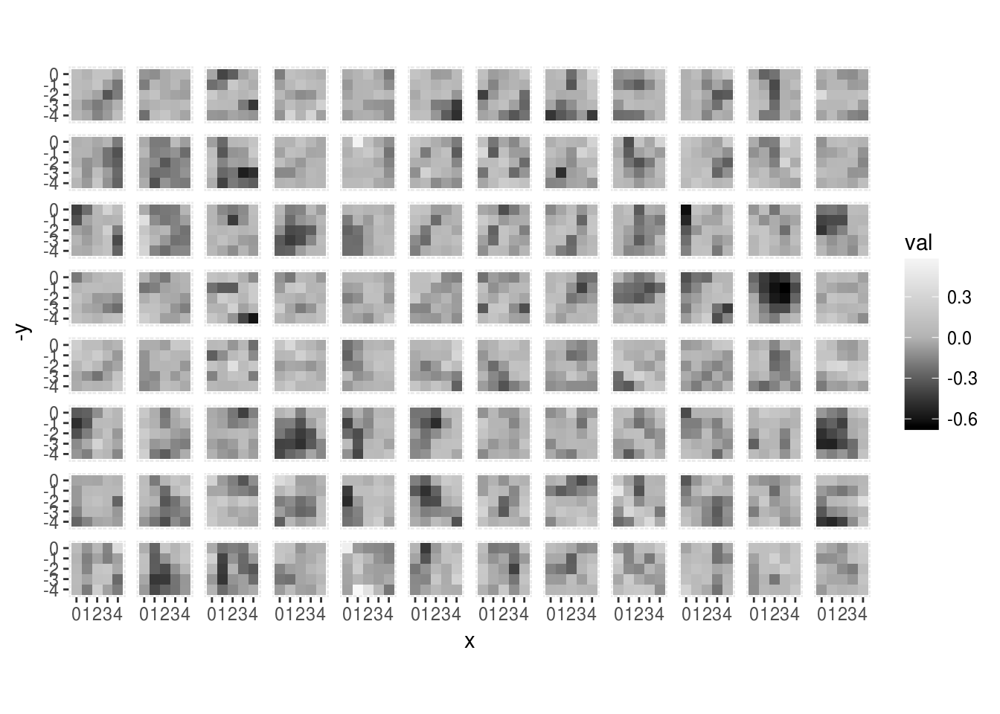
graf_activaciones(probas, 5)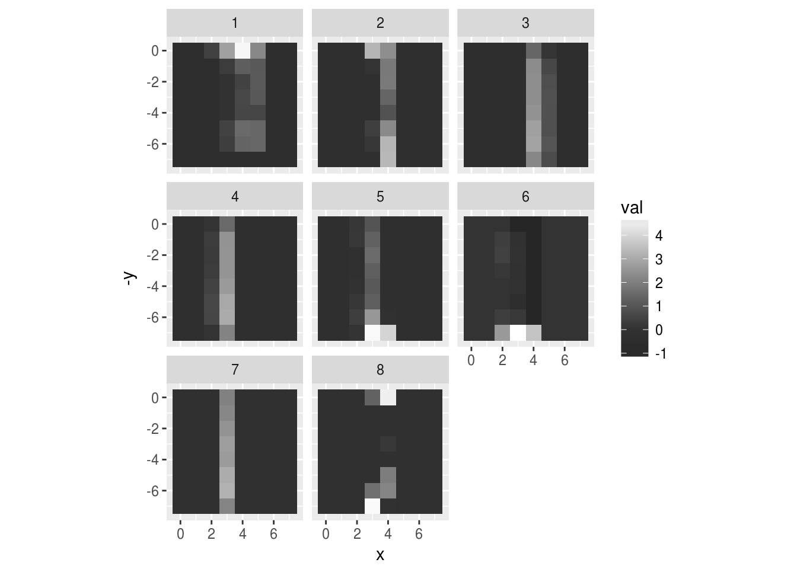
graf_activaciones(probas, 15)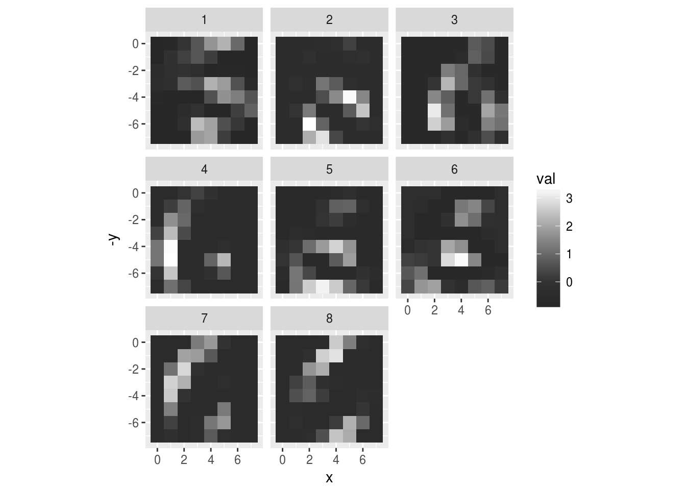
graf_activaciones(probas, 8)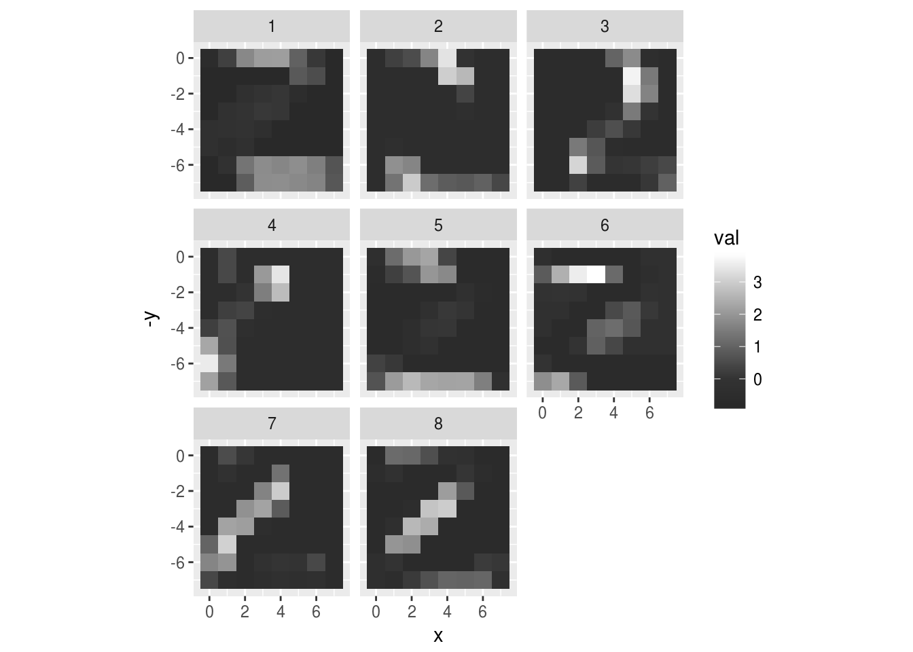
graf_activaciones(probas, 33)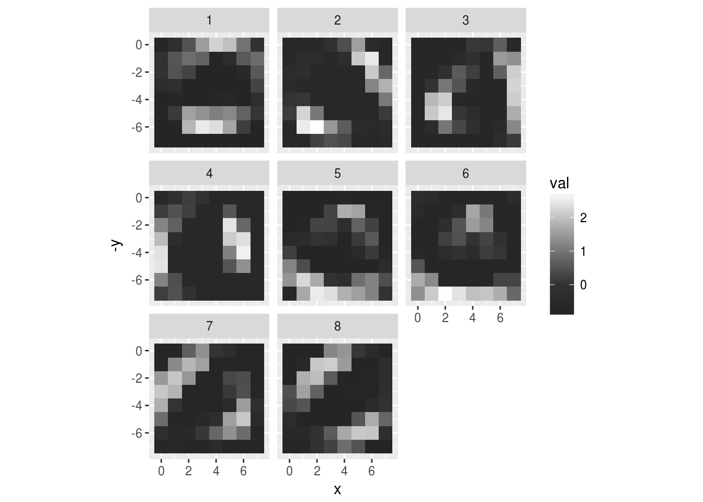
#image((x_train[4,1:16,16:1,1]))Y los filtros aprendidos en la segunda capa:
capa_2 <- wts[[3]]
out <- list()
for(j in 1:8){
out_temp <- list()
for(i in 1:12){
dat_lay <- data_frame(val = as.numeric(capa_2[,,j,i]), pixel = 1:9, unidad=i, otra=j) %>% mutate(y = (pixel-1) %% 3, x = (pixel-1) %/% 3)
out_temp[[i]] <- dat_lay
}
out[[j]] <- bind_rows(out_temp)
}
capa_out <- bind_rows(out)
ggplot(capa_out, aes(x=x, y=-y)) + geom_tile(aes(fill=val)) +
facet_grid(otra~unidad) + coord_equal()+scale_fill_gradient2(low = "black", mid='gray50',high = "white") + theme(strip.background = element_blank(), strip.text = element_blank()) 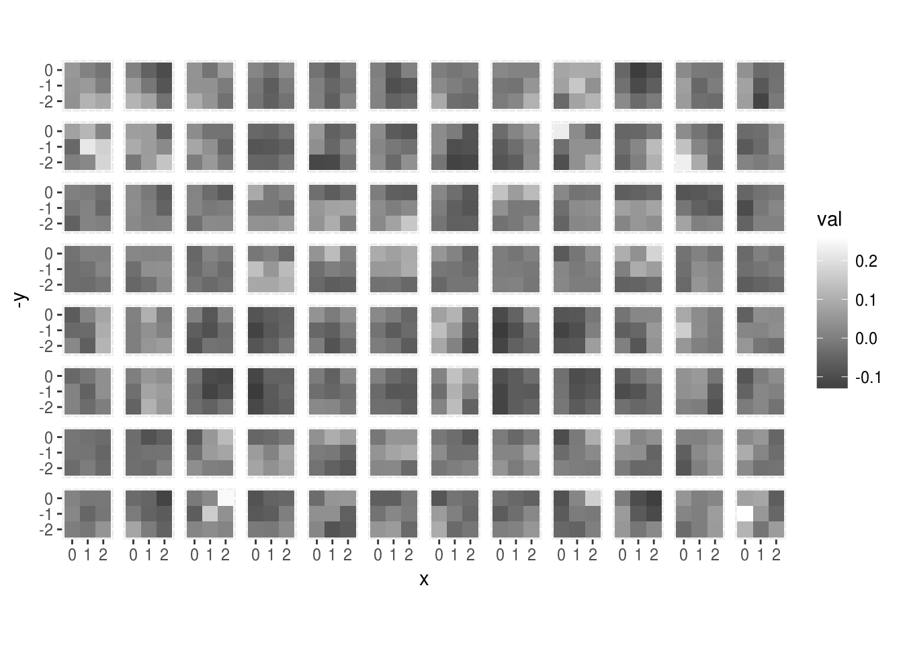
Breiman, Leo. 2001. “Statistical Modeling: The Two Cultures (with Comments and a Rejoinder by the Author).” Statist. Sci. 16 (3). The Institute of Mathematical Statistics: 199–231. doi:10.1214/ss/1009213726.
James, Gareth, Daniela Witten, Trevor Hastie, and Robert Tibshirani. 2014. An Introduction to Statistical Learning: With Applications in R. Springer Publishing Company, Incorporated. http://www-bcf.usc.edu/~gareth/ISL/.
Ng, Andrew. 2017. “Machine Learning.” https://www.coursera.org/learn/machine-learning.
Srivastava, Nitish, Geoffrey Hinton, Alex Krizhevsky, Ilya Sutskever, and Ruslan Salakhutdinov. 2014. “Dropout: A Simple Way to Prevent Neural Networks from Overfitting.” J. Mach. Learn. Res. 15 (1). JMLR.org: 1929–58. http://dl.acm.org/citation.cfm?id=2627435.2670313.